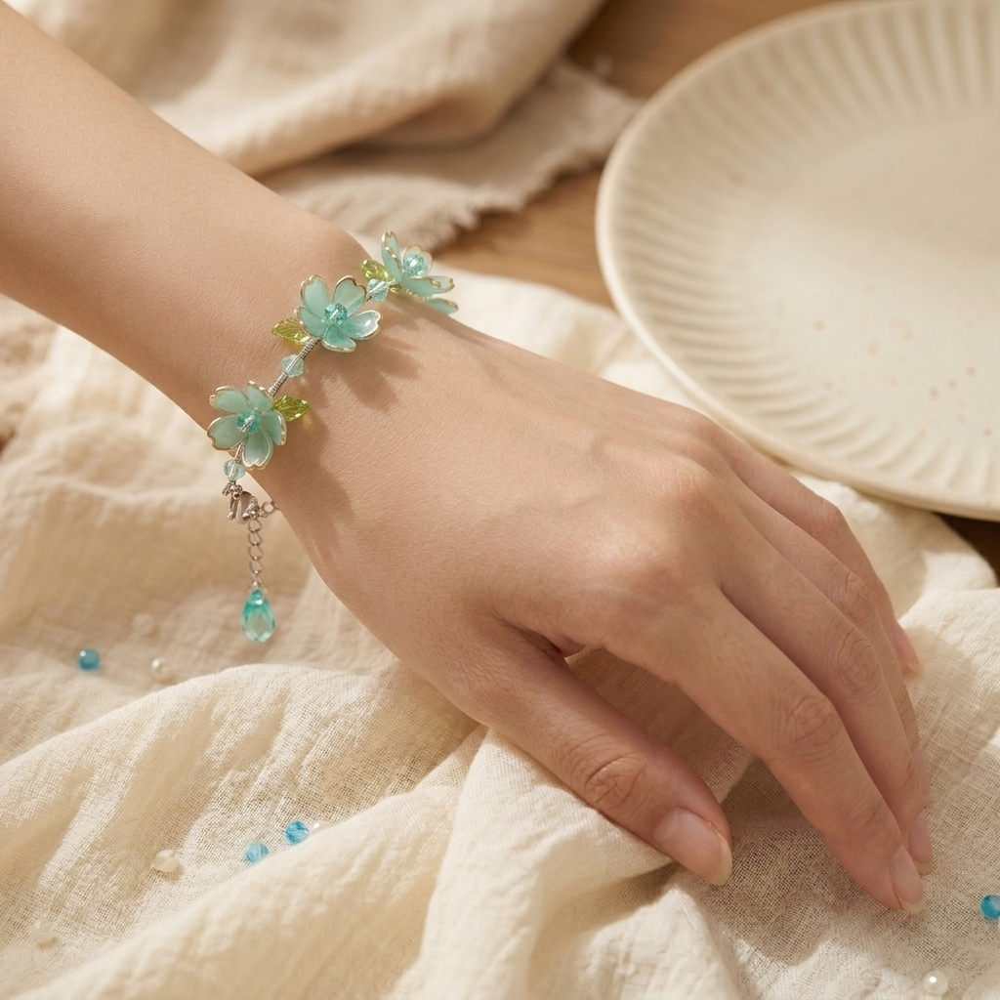
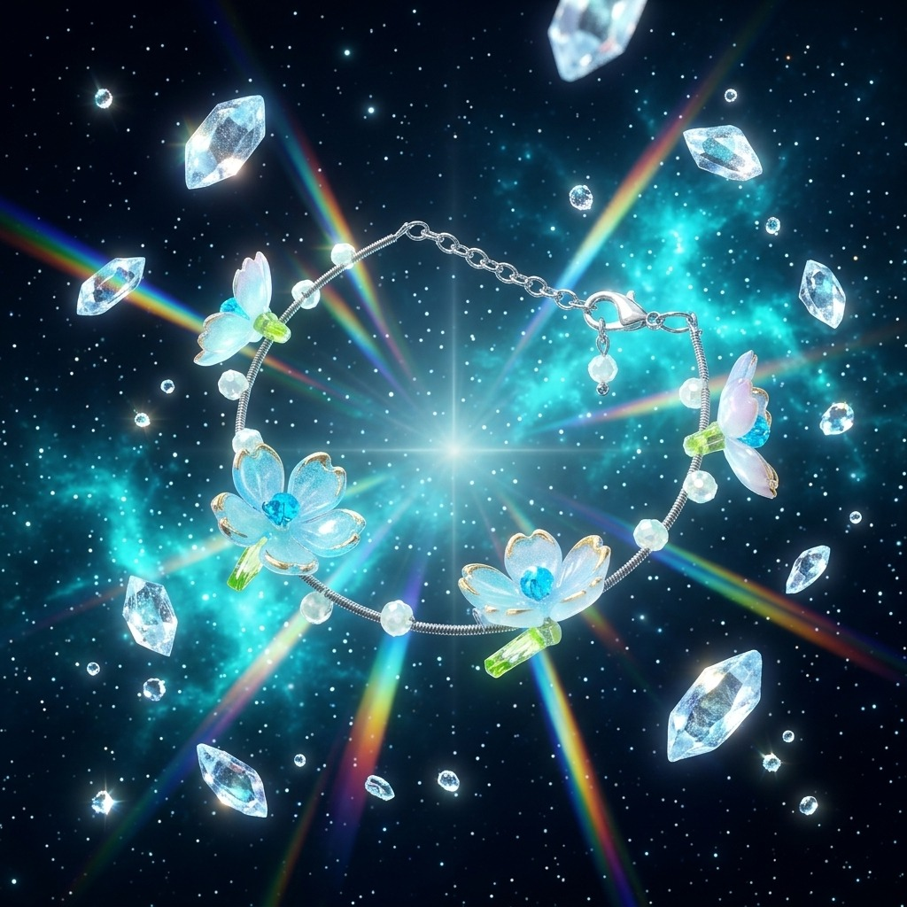
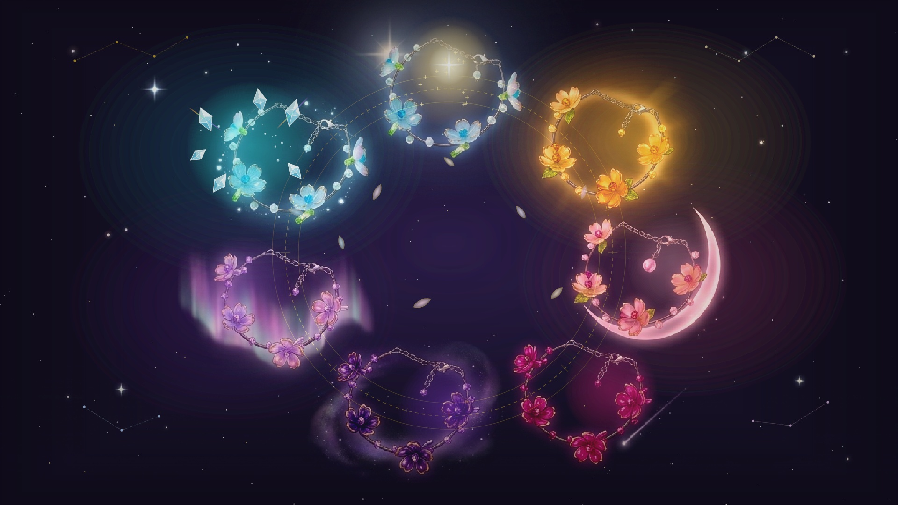

Flowerjuicee · Handmade Floral Jewelry
THE CELESTIAL BLOOMS
"Tujuh Bunga Semesta di Bawah Sinar Rembulan dan Bintang"
Koleksi mahakarya perhiasan gelang kawat handmade dengan kelopak bunga resin transparan bertepi emas murni, bertahtakan manik kristal faset, yang dipadukan harmonis dengan 7 simbol surgawi semesta.
Angka 7 adalah angka sakral dalam mitologi kosmik, melambangkan gugus Tujuh Bintang Pleiades dan harmoni tujuh hari dalam seminggu. Flowerjuicee memadukan kelembutan bunga abadi (*blooms*) dengan keagungan bintang (*celestial*), menghadirkan gelang yang bukan sekadar aksesori cantik, tetapi lambang kekuatan batin dan cinta yang abadi:

Formasi Lingkaran Harmoni Kosmik: Setiap gelang menempati orbit surgawinya di atas beludru ungu malam kerajaan.
| No & Varian Gelang |
Warna & Batu Kristal |
Karakteristik Surgawi |
Kekuatan Batin (Celestial Power) |
Pesan Cinta Puitis |
| 1. Stella Maris |
Sky Azure Blue & Safir |
🌟 Bintang Kejora (Morning Star) |
Aura Ketenangan & Penuntun Jiwa |
Dermaga paling tenang di tengah dunia bising. |
| 2. Solar Solstice |
Honey Amber & Emas Madu |
☀️ Surya Senja (Golden Solstice) |
Aura Kehangatan & Pemulihan Hati |
Senyuman yang selalu menghangatkan hati lelah. |
| 3. Luna Crescent |
Sakura Pink & Baby Pink |
🌙 Bulan Sabit Mutiara |
Aura Kemurnian Cinta & Romansa |
Debar cinta pertama yang selalu bersemi indah. |
| 4. Astraea Spark |
Ruby Magenta & Raspberry |
🌠 Komet Bintang Jatuh |
Aura Keberanian & Sukacita Menular |
Tawa riang pembawa sukacita dan keajaiban. |
| 5. Midnight Galaxy |
Royal Deep Purple & Ametis |
🌌 Bulan Purnama & Galaksi |
Aura Keagungan Berkelas & Intuisi |
Pesona agung yang ditakdirkan oleh semesta. |
| 6. Celestia Borealis |
Pastel Lilac & Lavender Quartz |
💜 Tirai Cahaya Aurora |
Aura Kedamaian Puitis & Inspirasi |
Kehadiran magis seindah mimpi yang menyejukkan. |
| 7. Stella Glacialis |
Frosted Aqua & Embun Es |
❄️ Kristal Es Berlian Prisma |
Aura Ketulusan Murni & Perisai Hati |
Ketulusan hati yang tanpa pamrih dan suci. |


Gelang 7 · Frosted Glacial Cyan
STELLA GLACIALIS (The Crystal Prism)
Simbol: Kristal Es Prisma 3D & Embun Beku · Material: Kawat perak pilin, kelopak cyan es beku tepi emas, kristal opal es murni.
📜 SINOPSIS MITOLOGIS (THE CELESTIAL LORE)
Mengkristal dari tetesan embun pertama di puncak gletser abadi yang tersentuh bias fajar prisma. Warna cyan es transparan membiaskan spektrum pelangi saat diterpa sinar matahari. Mewakili cinta yang paling suci dan tulus—cinta yang tidak menuntut balasan, tidak berpura-pura, dan sejernih tetesan air embun pegunungan.
⚡ KEKUATAN SURGAWI & AURA (CELESTIAL POWER)
Aura Ketulusan Murni & Perisai Kejernihan Hati: Menjernihkan pikiran dari prasangka negatif, melindungi kemurnian rasa cinta dari kepalsuan, serta mendinginkan amarah dengan kelembutan yang damai.
"Semurni kristal es dan sebening tetesan embun pertama fajar, ketulusan kasihmu takkan pernah ternoda."
💡 Alasan Beli untuk Pasangan: Kado untuk perempuan yang berhati suci, sederhana, tulus, dan memiliki kepribadian menyejukkan.

👑 THE LUCKY SEVEN COLLECTOR VAULT (MASTER ORBIT)
Formasi Lengkap: 7 Gelang Pleiades · Wooden Box Kayu Solid · Kain Sutra Beludru · 7 Story Cards Resmi.
📜 SINOPSIS MITOLOGIS (THE COMPLETE CELESTIAL ORBIT)
Ketika ketujuh bunga semesta bersatu dalam satu formasi lingkaran suci, orbit semesta berputar dalam keselarasan sempurna. Ketujuh energi kosmik bergandengan tangan mengelilingi sang pemilik, melengkapi setiap hari dalam seminggu dengan berkah cinta yang utuh dan tak terputus.
⚡ KEKUATAN SURGAWI & AURA (CELESTIAL POWER)
Aura Harmoni Paripurna & Berkah Semesta Utuh: Menyatukan 7 energi kosmik (ketenangan, kehangatan, romansa, keberanian, keagungan, puitika, kemurnian) dalam satu lingkaran pusaka cinta abadi.
Gunakan kartu cerita ini sebagai sisipan eksklusif di dalam kotak perhiasan Flowerjuicee saat kado dibuka oleh penerima:
"Di antara dunia yang bising dan penuh badai, senyumanmu adalah langit fajar yang jernih. Terima kasih selalu menjadi bintang kejora dan dermaga paling tenang di hidupku."
"Senyumanmu seperti cahaya matahari sore: selalu memberi kehangatan lembut yang merasuk ke dalam hati dan menyembuhkan lelahku. Tetaplah bersinar hangat untukku."
"Mencintaimu itu seperti menatap bulan sabit pertama kali: manis, murni, dan selalu membuat hatiku berdebar. Kamu adalah gadis termanis di semestaku."
"Semurni kristal es dan sebening tetesan embun pertama fajar, ketulusan kasihmu adalah harta paling berharga yang takkan pernah ternoda oleh waktu."
🌸 Panduan Perawatan Perhiasan Handmade Flowerjuicee
1. Hindari Kontak Bahan Kimia:
Lepaskan gelang saat menyemprotkan parfum, hand sanitizer, atau losion agar lapisan resin dan tepi kawat emas tetap berkilau jernih.
2. Penyimpanan Khusus:
Simpan gelang di dalam Fabric Pouch atau Hardbox Flowerjuicee yang disediakan untuk mencegah gesekan dengan benda tajam.
3. Pembersihan Lembut:
Usap lembut kelopak resin dengan kain microfiber kering setelah pemakaian seharian untuk menghilangkan sisa minyak kulit.
4. Kenakan Terakhir:
Jadikan gelang sebagai sentuhan terakhir saat berpakaian agar tidak tersangkut pada serat kain busana Anda.
CERTIFICATE OF ARTISAN AUTHENTICITY
SERTIFIKAT KEASLIAN MA HAKARYA
"Dokumen ini menyatakan bahwa setiap gelang dalam koleksi The Celestial Blooms dirangkai manual satu per satu dengan tangan, memadukan kawat pilin, resin kelopak transparan, dan manik kristal faset asli dengan penuh dedikasi cinta."
Artisan Studio: Flowerjuicee Atelier
Authenticity: 100% Handmade Craft
Official Seal: ✦ Celestial Blooms 2026 ✦
© 2026 Flowerjuicee · Handmade Floral Jewelry with Love · Dokumen Resmi Brand Book Koleksi The Celestial Blooms